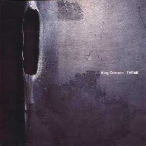
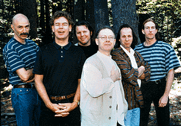
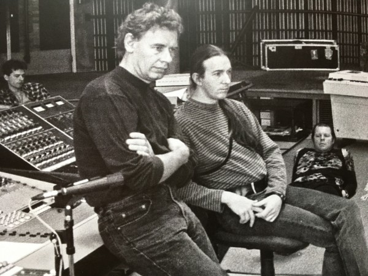
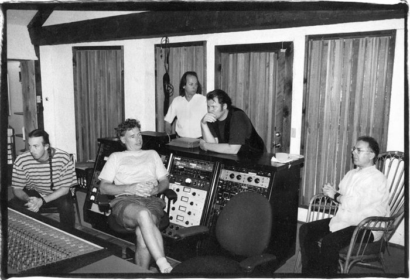

|

Thrak
Grabado a fines del '94 y editado en 1995, marca el resurgimiento de KC,
esta vez en forma de sexteto (en sus orígenes Fripp decía que se trataba de un
doble trío). Los instrumentales Vroom y Vroom vrooom
penetran en el clima del tema Red de 1974. El potente instrumental que da nombre al disco
(creación de Fripp), es el nuevo caballito de
batalla, y al tocarlo en vivo la banda se permitía improvisaciones (en 1996 KC editó el CD
"Thrakattak", algo así como "ataque de Thrak", con improvisaciones
en vivo en base a ese tema); las guitarras y el stick de Gunn se entremezclan
con duros acordes a distintos tiempos, una forma que repetirían en piezas de discos siguientes;
cada percusionista se alínea a uno de esos tiempos, dando la sensación de
estar presenciando un choque entre gigantes. Es la única pieza del album que
apunta hacia algo nuevo; tanto en el disco como en vivo, Thrak
es precedido por B'Boom (un dueto de los dos percusionistas que emerge
desde las entrañas de soundscapes de
Fripp), formando ambas piezas un binomio indisoluble. El resto
de los temas sigue la línea musical de la formación de la década anterior, con la
sola diferencia de que ya no están los fraseos interconectados entre las
guitarras, característicos de aquel cuarteto. Dinosaur es una hermosa simbiosis de sonidos Beatles/Crimson (por
decirlo de otra forma, una simbiosis Belew/Fripp, como pocas veces se logró), y en la melodía vocal de Walking on air se sigue notando la influencia de John Lennon sobre
Belew (nos recuerda al tema Jealous guy, de Lennon, de 1971). Excelente la suave
canción One
time, que se convirtió en un clásico. Hermosas las
partes de Inner garden (base de guitarra de Fripp con melodía vocal de
Belew), dejando en el aire el reclamo de que se fundieran en un gran tema, con
parte instumental en el medio, en lugar de ser dos pequeños separados. Un punto
flojo es People, también de Belew, con resabios del pop/new wave del KC
ochentoso, por lo que quedó un poco fuera de contexto. Un detalle: después de muchos años, Fripp grabó con melotrón. Es un
buen retorno.
Formación de la banda |
Temas |
| Robert Fripp: guitarra, soundscapes, melotrón |
1 - Vrooom 4'37 instrumental |
| Adrian Belew: guitarra, voz líder |
2 - Coda:Marine 475 2'41 instrumental |
| Bill Bruford: baterías acústica y electrónica |
3 - Dinosaur (Dinosaurio) 6'35 (letra) |
| Tony Levin: bajos y voz |
4 - Walking on air (Caminando sobre el aire) 4'34 |
| Trey Gunn: stick y voz |
5 - B'Boom 4'11 instrumental |
| Pat Mastelotto: baterías acústica y electrónica |
6 - Thrak 3'58 instrumental |
| |
7 - Inner garden I (Jardín interior I) 1'47
(letra) |
| |
8 - People (Gente) 5'53 |
| |
9 - Radio I 0'43 instrumental |
| |
10 - One time (Una vez) 5'21 (letra) |
| |
11 - Radio II 1'02 instrumental |
| |
12 - Inner garden II (Jardín interior II) 1'15 |
| |
13 - Sex sleep eat drink dream (Sueño de sexo, comida, bebida) 4'48 |
| |
14 - Vrooom vrooom 5'37 instrumental |
| |
15 - Vrooom vrooom coda 3'00 instrumental |
Música firmada por el grupo - Letras de Adrian Belew
 Levin, Bruford, Mastelotto, Fripp, Belew, y Gunn.
Notas
-
Sobre la nueva encarnación: "«La
música con un inconfundible acento Crimson me había estado sonando desde
1986/87. Tomé la decisión personal de reactivar King Crimson durante la
segunda mitad de 1990, pero sin una idea clara de cómo sería»[Fripp].
Tras empezar a componer la música para una versión cinematográfica,
condenada al fracaso, de la novela Neuromancer del autor de ciencia ficción
ciberpunk William Gibson, Fripp contactó con el cantante David Sylvian a
finales de 1991 para invitarlo a formar parte de un nuevo Crimson. «Aunque
muy halagado, decidí que no me sentía preparado para asumir todo el bagaje
y la historia que conlleva ser miembro de King Crimson»,
explicó Sylvian a Paul Tingen en la revista Sound On Sound en 1998. «Así
que, en lugar de eso, aceptamos la oferta de la gira como una oportunidad
para componer material para un álbum».
Fripp había participado como invitado en uno o dos proyectos de Sylvian en
los ochenta, pero este iba a ser algo mucho más sustancial. La gira contó
con Fripp y Sylvian, con Gunn en Stick." (*) Para la gira se acopló a
Pat Mastelotto en batería, quien junto con Gunn serían reclutados por
Fripp para la encarnación KC de los '90, sumándolos al cuarteto de la
década anterior.
-
El disco "Intergalactic boogie
express", con grabaciones en vivo de la gira europea que en 1991 hicieron Robert Fripp & The
league of crafty guitarists, incluye el tema Larks' Thrak (compuesto
por Fripp), que tiene dos partes bien diferentes: la primera es un fraseo de
guitarra del mismo estilo que los tocados por Fripp en la saga de temas Larks'
tongues in aspic; la segunda es el antecedente acústico del tema Thrak,
adaptado al sexteto eléctrico para este disco de KC.
-
Vrooom, creación de
Fripp, fue nominado para los premios Grammy
como mejor tema instrumental. La idea original de Fripp del “doble trío” se
plasma especialmente en esta pieza, ya que se escucha a Gunn, Fripp y Bruford
por un canal y a Belew, Levin y Mastelotto por el otro.
-
El tema One time surgió originalmente de los
ensayos en estudios Applehead con Fripp, Gunn y Marotta.
-
Sobre Dinosaur: "La canción surgió por primera
vez en los ensayos de Woodstock, después de que Fripp le mostrara con
entusiasmo a Belew cinco acordes que había escrito. En sus notas para
Belewprints, el guitarrista recuerda que Fripp esperaba que el grupo pudiera
crear un equivalente Crimson de I Am The Walrus. ... En 1997,
respondiendo a las preguntas de los fans a través de Elephant Talk, el
grupo de noticias de internet, Belew ofreció esta perspectiva sobre los
procesos que llevaron a la realización del tema: «He notado que las
canciones que parecen funcionar mejor son las que, al menos, empiezan con
Robert y yo escribiendo juntos. Diría que Dinosaur es una exitosa
canción de Crimson. Añadí más y más cambios para adaptar la melodía y
¡terminó con una épica! La cuestión es que había empezado con Robert y,
por lo tanto, sonaba más a Crimson que, por ejemplo, People, que había
escrito yo solo». También fue Belew, usando el sintetizador de guitarra
Roland GR-1, quien ideó el sonido inicial, que emula el inquietante timbre
del mellotron, dándole a la canción una cualidad orquestal. «Hay momentos
en los que puedo pasar a la composición, un área normalmente reservada
para Robert», dice Belew. «La sección instrumental central de Dinosaur
es un buen ejemplo. Era una pieza aparte que yo había pensado para un disco
en solitario, pero cuando la compuse en medio de Dinosaur, encajó»".
(*)
-
En principio Inner garden era una única pieza
tocada por toda la banda (incluso DGM editó un instrumental grabado con
esta forma en un ensayo), pero para la versión del album se convirtió en
dos pequeñas piezas separadas, a modo de interludios.
-
Sobre B'Boom: "Bruford recuerda la pieza con
cariño: «El
interés técnico en la batería para mí fue fantástico y muy divertido, y
ahí mismo había una razón más que suficiente para unirme a King Crimson.
Porque Pat sería el gran cronometrador, el vínculo entre la banda y el
tempo, lo que me permitiría ser el terrorista, lo cual era genial. Así que
yo podía tocar la parte elegante y él tocaba la parte que conectaba la
parte elegante con el oyente. Un escenario encantador y una comprensión muy
clara y sencilla de lo que harían los dos bateristas, y yo podía trabajar
bien con eso».
El título es una parodia de Bruford sobre el grupo multipercusión de Max
Roach, M'Boom." (*) B'Boom=Bill Boom
-
Sobre Walking on air: "La
interpretación vocal de Belew evoca fuertemente a John Lennon, uno de sus héroes
musicales. De hecho, una de las primeras veces que Mastelotto conoció al
guitarrista, en una fiesta posterior a un concierto de la gira de
Fripp y Sylvian, Belew y su esposa iban vestidos como John y Yoko. Partiendo
de una de las líricas líneas de bajo de Levin, Belew creó una canción
encantadora, tan suave y refrescante como una ligera brisa, lo que la
convierte en una rareza en este álbum." (*)
-
La parte central de Vrooom vrooom fue compuesta como sección central
para el tema Red en 1974, pero no fue usada en ese momento.
-
El arte de tapa lo hizo Bill Smith, quien
estuvo durante las sesiones de grabación para inspirarse. "«Tengo
que poder escuchar la música para la portada del álbum que estamos
haciendo. Me pareció que tenía un aire muy duro y metalero, y eso fue lo
que me dio la idea de la portada».
La pieza de metal que finalmente usó era una sección de un armario de
seguridad informática en las instalaciones de Bill Smith, que no había
cumplido con la garantía del fabricante." (*)
(*): Sid Smith, de su libro In the court
of King Crimson

Arriba: publicidad en Buenos Aires, sep/oct 1994,
promocionando los conciertos que iniciaban la gira mundial del sexteto. Abajo
x2: en estudio de grabación.
 
|
 Thrak
Thrak